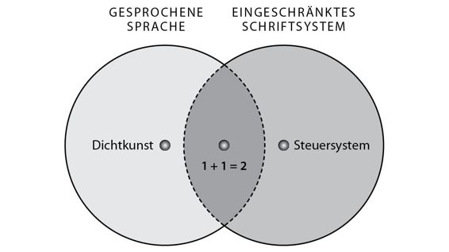
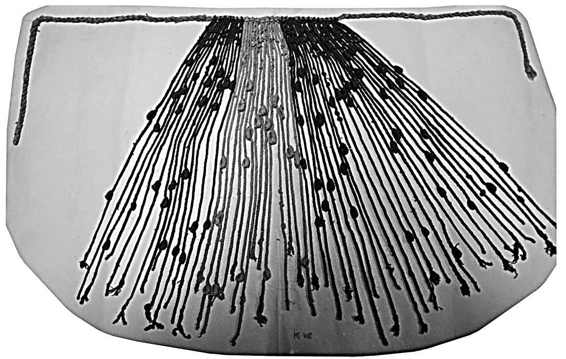
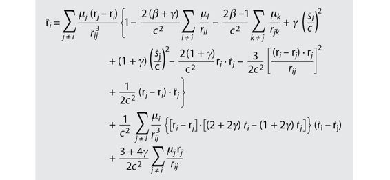

Damals wurde die Schrift nur zur Aufzeichnung von Daten und Zahlen genutzt. Wer auf den 5000 Jahre alten Tontäfelchen unserer Vorfahren nach weisen Worten sucht, wird bitter enttäuscht. Die Botschaften, die unsere Ahnen aus Sumer hinterließen, lauten beispielsweise: »29.086 Maß. Gerste. 37 Monate. Kushim.« Diese Nachricht bedeutet vermutlich: »29086 Maß Gerste wurden über 37 Monate hinweg in Empfang genommen. Gezeichnet Kushim.« Die ältesten Texte der Menschheit enthalten leider weder tiefschürfende philosophische Erkenntnisse noch Gedichte, Legenden, Gesetze oder Heldenepen. Es handelt sich um ganz alltägliche Aufzeichnungen aus dem Geschäftsleben – Steuerzahlungen, Schuldverschreibungen und Besitzurkunden.
Aus den Anfangstagen der Schrift ist nur eine weitere Textsorte überliefert, und die ist sogar noch unspektakulärer: Es handelt sich um Wortlisten, die Schreiberlehrlinge zur Übung wieder und wieder abschrieben. Selbst wenn ein gelangweilter Schüler beschlossen hätte, lieber Verse zu schmieden als Rechnungen zu kopieren, dann hätte er sie nicht aufschreiben können. Die erste sumerische Schrift war nämlich kein vollständiges, sondern nur ein partielles Schriftsystem. Ein vollständiges Schriftsystem ist eine Schrift, mit der sich die gesprochene Sprache mehr oder weniger vollständig wiedergeben lässt. Sie kann daher alle sprachlichen Äußerungen von Menschen aufzeichnen, und damit natürlich auch die Dichtung. Partielle Schriftsysteme sind dagegen Zeichensysteme, mit denen sich nur ganz bestimmte Informationen aus klar definierten Bereichen erfassen lassen. Die lateinische Schrift, die altägyptischen Hieroglyphen oder Braille sind vollständige Schriftsysteme. Mit ihnen kann man Steuereinnahmen, Liebesgedichte, Geschichtsbücher, Kochrezepte und Gesetze niederschreiben. Die erste sumerische Schrift ist dagegen genau wie die mathematische Schrift oder die Notenschrift ein partielles Schriftsystem. Mit mathematischen Zeichen kann man zwar Berechnungen anstellen, aber keine Liebesgedichte schreiben.

Partielle Schriftsysteme können nicht das gesamte Spektrum der gesprochenen Sprache erfassen, doch sie können umgekehrt Dinge ausdrücken, die jenseits der gesprochenen Sprache liegen. Mit partiellen Systemen wie der sumerische Schrift oder mathematischen Zeichen lassen sich zwar keine Gedichte niederschreiben, sehr wohl aber Steuereinnahmen festhalten.
Es störte die Sumerer nicht weiter, dass sich ihre Schrift nicht für Poesie eignete. Sie hatten sie nicht erfunden, um die gesprochene Sprache wiederzugeben, sondern um Dinge zu tun, die man mit der gesprochenen Sprache eben nicht tun konnte. Es gibt Kulturen, etwa in den Anden vor der Eroberung durch die Spanier, die ihre gesamte Geschichte hindurch nur partielle Schriftsysteme verwendeten, ohne jemals auf den Gedanken zu kommen, dass ihnen etwas fehlen könnte. Die Schrift der Andenvölker unterscheidet sich ganz erheblich von der sumerischen. Die Unterschiede sind sogar so groß, dass manche Experten behaupten, es habe sich nicht einmal um eine Schrift gehandelt. Sie wurde nicht in Tontäfelchen geritzt oder auf Papier geschrieben. Es handelt sich vielmehr um Knoten in bunten Schnüren namens »Quipu«. Jeder Quipu bestand aus vielen verschiedenfarbigen Woll- oder Baumwollschnüren. Jede Schnur wurde an unterschiedlichen Stellen geknotet. Ein einzelner Quipu kann aus Hunderten von Schnüren und Tausenden von Knoten bestehen. Mit der Kombination von unterschiedlichen Knoten, Schnüren und Farben ließen sich große Mengen mathematischer Daten festhalten, zum Beispiel Steuereinnahmen und Besitzurkunden.45
Im Vergleich zu einem USB-Stick mag uns ein Quipu primitiv erscheinen, doch er war ein sehr wirkungsvolles Instrument zur Speicherung von Daten und Zahlen. Mithilfe dieser Schnüre wurden über Jahrhunderte und vielleicht Jahrtausende hinweg Städte, Königreiche und Imperien verwaltet.46 Ihr volles Potenzial entfalteten sie unter den Inkas, deren Reich 10 bis 12 Millionen Einwohner hatte und sich über die heutigen Staaten Peru, Ecuador und Bolivien sowie Teile von Chile, Argentinien und Kolumbien erstreckte. Mithilfe der Quipus konnten die Inkas große Mengen von Information über ihr Imperium speichern und verarbeiten und ihre komplexe Verwaltung aufrechterhalten.
Die Quipus waren derart effektiv, dass die Spanier sie in den ersten Jahren nach der Eroberung des Inkareichs verwendeten, um ihre neue Kolonie zu verwalten. Doch da die Spanier diese Schnüre nicht selbst lesen und schreiben konnten und auf die Hilfe der einheimischen Experten angewiesen waren, befürchteten sie irgendwann, sie könnten über den Tisch gezogen werden. Nachdem sie ihre Kolonialherrschaft etabliert hatten, ersetzten sie die Quipus durch lateinische Buchstaben und arabische Ziffern. Nur wenige Quipus überlebten die Kolonialherrschaft, und die meisten davon sind heute nicht mehr zu entschlüsseln, da die Kunst der Knotenschrift untergegangen ist.

14. Ein Quipu aus den Anden (12. Jahrhundert)
Die Wunder der Bürokratie
Anders als in den Anden wollten die Menschen in Mesopotamien bald auch andere Dinge festhalten als langweilige Bilanzen. Zwischen 3000 und 2500 v. u. Z. kamen immer mehr Zeichen hinzu, und die sumerische Schrift verwandelte sich allmählich in ein vollständiges Schriftsystem, das als »Keilschrift« bezeichnet wird. Um das Jahr 2500 v. u. Z. wurden in dieser Keilschrift königliche Edikte, literarische Texte und sogar private Briefe niedergeschrieben. Etwa um diese Zeit entwickelten die Ägypter eine eigene Schrift, nämlich die Hieroglyphen. Weitere vollständige Schriftsysteme entstanden in China um das Jahr 1200 v. u. Z. und in Mittelamerika zwischen 1000 und 500 v. u. Z.
Von diesen Ursprüngen breiteten sich die Schriftsysteme in alle Himmelsrichtungen aus, veränderten ihre Formen und wurden zu immer neuen Zwecken verwendet. Die Menschen begannen, Gedichte, Geschichtsbücher, Liebesgeschichten, Theaterstücke, heilige Schriften und Kochbücher niederzuschreiben. Doch die wichtigste Aufgabe der Schrift blieb die Verarbeitung endloser mathematischer Daten, und diese wiederum blieb die Domäne der partiellen Schriftsysteme. Die hebräische Bibel, die griechische Ilias, das hinduistische Mahabarata, der buddhistische Pali-Kanon und die christlichen Evangelien begannen alle in Form von mündlichen Überlieferungen und hätten ohne die Schrift nie überlebt. Doch die Steuerbuchhaltung und komplizierte bürokratische Systeme entstanden Hand in Hand mit den partiellen Schriftsystemen und blieben mit diesen verbunden wie siamesische Zwillinge.
Doch je mehr niedergeschrieben wurde und je weiter die Ordner der Verwaltung anschwollen, umso größer wurde ein neues Problem. Die Informationen, die in einem Gehirn abgelegt werden, sind leicht aufzufinden. In meinem Gehirn sind Milliarden von Informationen gespeichert, doch ich kann in Sekundenschnelle den Namen der Hauptstadt Italiens abrufen, mich kurz darauf daran erinnern, wo ich am 11. September 2001 war und danach den Weg von meiner Wohnung zu meinem Arbeitsplatz an der Universität von Jerusalem rekonstruieren. Niemand weiß, wie wir das schaffen, doch es ist allgemein bekannt, wie erstaunlich effizient die Suchmaschine unseres Gehirns ist. Außer wenn wir versuchen, uns daran zu erinnern, wo wir die Autoschlüssel hingelegt haben.
Aber wie finden Sie eine bestimmte Information, die Sie irgendwann in irgendwelche Kordeln geknotet oder Tontäfelchen geritzt haben? Solange Sie nur zehn oder hundert davon haben, ist das nicht weiter schwierig. Aber was machen Sie, wenn Sie Tausende angesammelt haben, wie König Zimri-Lim von Mari (ein Zeitgenosse des babylonischen Königs Hammurabis)?
Stellen Sie sich vor, wir befinden uns im Jahr 1776 vor unserer Zeitrechnung. Zwei Einwohner von Mari streiten sich über den Besitz eines Weizenfeldes. Jakob behauptet, er habe das Feld vor dreißig Jahren gekauft. Esau erwidert, er habe das Feld vor dreißig Jahren lediglich verpachtet und wolle es nun wieder selbst bestellen. Nach einem hitzigen Wortgefecht und einigen Handgreiflichkeiten begeben sich Jakob und Esau schließlich ins königliche Archiv, wo Zimri-Lim die Besitzurkunden seiner Untertanen aufbewahrt. Im Archiv werden sie von einem Beamten zum anderen geschickt. Während sie warten, trinken sie Kräutertee, und irgendwann bekommen sie die Auskunft, sie möchten doch bitte morgen wiederkommen. Nachdem sich das Spiel am nächsten Tag wiederholt hat, sagt ihnen ein mürrischer Beamter, sie sollten doch selbst suchen. Er führt die beiden in einen riesigen Raum, an dessen Wänden Tausende Tontäfelchen aufgestapelt sind. Können Sie sich diesen Raum vorstellen? Wie um Himmels Willen soll ein Beamter unter all den identischen Tontäfelchen eine dreißig Jahre alte Urkunde finden? Und selbst wenn er sie findet, woher weiß er dann, ob sie das aktuellste Dokument ist, das sich mit dem umkämpften Feld beschäftigt? Und wenn er die Urkunde nicht findet, bedeutet das dann, dass Esau sein Feld nie verkauft hat? Oder nur, dass das Dokument verloren ging oder sich zu Matsch verwandelte, als es einmal in das Archiv regnete?
Um ein funktionierendes Datenverarbeitungssystem zu schaffen, reicht es ganz offensichtlich nicht aus, ein paar Zahlen in eine Tontafel zu ritzen. Dazu waren Kataloge und Suchsysteme erforderlich, und vor allem pedantische Beamte, die sie benutzten.
Die Erfindung dieser Systeme erwies sich als schwieriger als die Erfindung der Schrift. Erstaunliche viele Kulturen haben ihr eigenes Schriftsystem hervorgebracht. Immer wieder entdecken Archäologen neue und vergessene Schriften, von denen einige möglicherweise sogar noch älter sind als die sumerische. Doch die meisten davon blieben unbedeutende Kuriositäten, weil ihre Erfinder vergessen haben, ein funktionierendes System zur Katalogisierung und Suche von Informationen zu entwickeln. Was die Sumerer, die alten Ägypter, die alten Chinesen und die Inkas aus der Masse hervorhebt, ist die Tatsache, dass sie effiziente Methoden zur Archivierung, Katalogisierung und Suche ihrer schriftlichen Aufzeichnungen entwickelten. Außerdem richteten sie eigene Schulen für Schreiberlinge, Beamte, Archivare und Buchhalter ein.
In diesen Schulen wurde hart gebüffelt. Eine 4000 Jahre alte Schreibübung aus Mesopotamien, die von den damaligen Schülern abgeschrieben und von modernen Archäologen ausgegraben wurde, vermittelt einen kleinen Einblick in das Leben der Schüler im Zweistromland:
Ich kam, setzte mich und mein Lehrer las mein Täfelchen. »Da fehlt etwas!«, sagte er.
Und er schlug mich mit dem Rohrstock.
Einer der Aufseher sagte: »Warum hast du ohne meine Erlaubnis den Mund aufgemacht?«
Und er schlug mich mit dem Rohrstock.
Der Regelbewahrer sagte: »Warum bist du ohne meine Erlaubnis aufgestanden?«
Und er schlug mich mit dem Rohrstock.
Der Türhüter sagte: »Warum gehst du ohne meine Erlaubnis?«
Und er schlug mich mit dem Rohrstock.
Der Hüter des Bierkrugs sagte: »Warum hast du ohne meine Erlaubnis Bier getrunken?«
Und er schlug mich mit dem Rohrstock.
Der Sumerisch-Lehrer sagte: »Warum hast du Akkadisch47 gesprochen?«
Und er schlug mich mit dem Rohrstock.
Mein Lehrer sagte: »Deine Handschrift ist schlecht!«
Und er schlug mich mit dem Rohrstock.48
Die Schreiber lernten nicht nur Lesen und Schreiben, sondern auch den Umgang mit Katalogen, Wörterbüchern, Kalendern, Formularen und Tabellen. Sie lernten Techniken zur Erfassung, Suche und Verarbeitung von Information, die sich ganz erheblich von der Denkweise unseres Gehirns unterscheiden. Im Gehirn ist alles lose miteinander verknüpft. Wenn ich meine Heiratsurkunde suche, denke ich an meine Flitterwochen in Tansania, was mich wiederum an ein Krokodil erinnert, das beinahe meinen Fuß verschlungen hätte, und von da springen meine Gedanken zu Siegfried, dem Drachentöter. Ehe ich mich recht besinne, summe ich das Siegfried-Motiv aus Richard Wagners Ring. In der Bürokratie muss dagegen alles klar auseinandergehalten werden. Es gibt eine Schublade für Heiratsurkunden, eine andere für Steuerbücher und eine dritte für Gerichtsverfahren. Wie sollte man sonst auch irgendetwas wiederfinden? Dinge, die keine eigene Schublade haben – zum Beispiel Drachen –, landen im Papierkorb. Dinge, die sich in mehr als eine Schublade einsortieren lassen (fallen Wagner-Opern unter »Musik«, »Theater« oder in eine ganze neue Sparte?), bereiten Kopfzerbrechen. Deswegen müssen fortwährend neue Schubladen hinzugefügt und alte ausgemistet oder umsortiert werden.
Damit das System funktioniert, müssen die Hüter der Schubladen so umprogrammiert werden, dass sie nicht mehr wie Menschen denken, sondern wie Beamte und Buchhalter. Seit frühesten Zeiten weiß jeder, dass Beamte und Buchhalter nicht wie Menschen denken. Sie denken wie Aktenschränke. Dafür können sie aber nichts: Sie müssen so denken. Andernfalls würden sämtliche Schubladen durcheinandergeraten und es wäre völlig unmöglich, Städte und Königreiche zu verwalten. Das ist vielleicht die wichtigste Auswirkung der Schrift auf die Geschichte der Menschheit: Ganz allmählich veränderte sie die Denkweise und Weltsicht der Menschen. Freie Assoziation und ganzheitliches Denken mussten Bürokratie und Kästchendenken weichen.
Die Sprache der Zahlen
Im Laufe der Jahrhunderte wurde der Unterschied zwischen der bürokratische Datenverarbeitung und der natürlichen menschlichen Denkweise immer größer. Ein entscheidender Schritt kam vor dem neunten Jahrhundert unserer Zeitrechnung mit der Erfindung eines neuen partiellen Schriftsystems, das mathematische Daten mit beispielloser Effizienz verarbeiten konnte. Dieses Schriftsystem bestand aus zehn Zeichen, die für die Zahlen von 0 bis 9 standen, und wurde als »arabisches Ziffernsystem« bezeichnet. In Wirklichkeit waren es die Inder, die diese Ziffern erfunden hatten. Die Araber entdeckten diese Schrift nach ihrer Eroberung des Subkontinents, brachten sie in den Nahen Osten, von wo aus sie schließlich auch nach Europa kam. Als später weitere Zeichen hinzugefügt wurden (zum Beispiel für Addition, Subtraktion, Multiplikation und Division), war die mathematische Schrift geboren.
Obwohl die mathematische Schrift immer ein partielles Schriftsystem blieb, hat sie sich zur vorherrschenden Weltsprache entwickelt. Fast alle Staaten, Unternehmen, Organisationen und Einrichtungen verwenden mathematische Zeichen, um Daten zu speichern und zu verarbeiten, und zwar unabhängig davon, ob sie Arabisch, Bengalisch, Englisch oder Norwegisch sprechen. Jede Information, die sich in die mathematische Schrift übersetzen lässt, wird mit erstaunlicher Geschwindigkeit und Effizienz verarbeitet. Und jede Information, die sich aus unerfindlichen Gründen nicht in die mathematische Schrift übersetzen lässt, wird ignoriert oder vergessen.
Wer Einfluss auf die Entscheidungen von Regierungen, Organisationen und Unternehmen nehmen will, muss daher lernen, in Zahlen zu sprechen. Experten tun alles, um selbst Vorstellungen wie »Armut«, »Glück« oder »Ehrlichkeit« in die Zahlensprache zu übersetzen (zum Beispiel als »Tagesverdienst«, »subjektives Wohlbefinden« oder »Kreditwürdigkeit«). Ganze Wissensgebiete wie die Physik oder die Ingenieurwissenschaften haben sich nahezu vollständig von der gesprochenen Sprache gelöst und finden fast ausschließlich in mathematischer Schrift statt.

Diese Gleichung berechnet die Beschleunigung einer Masse i unter Einwirkung der Schwerkraft, und zwar nach den Gesetzen der Relativitätstheorie. Wenn Laien Gleichungen wie diese sehen, verfallen sie in der Regel in eine Schreckstarre, wie ein Reh im Scheinwerferlicht eines heranrasenden Autos. Das ist eine völlig natürliche Reaktion und hat nichts mit mangelnder Intelligenz zu tun. Die Evolution hat den Menschen nicht beigebracht, so zu denken. Wer jedoch die Relativitätstheorie verstehen möchte, muss traditionelle Denkweisen hinter sich lassen und lernen, mit Hilfe mathematischer Symbole zu denken.
In den vergangenen Jahrzehnten hat die mathematische Schrift ein weiteres revolutionäres Schriftsystem hervorgebracht, nämlich ein binäres Zeichensystem, das nur noch aus zwei Zeichen besteht: 0 und 1. Die Wörter, die ich gerade auf meiner Tastatur tippe, werden von meinem Computer in Reihen von Nullen und Einsen übersetzt.
*
Die Schrift wurde als Dienstmagd des menschlichen Bewusstseins geboren, doch sie schwingt sich zunehmend zu dessen Herrin auf. Unseren Computern fällt es schwer, die Sprache, Gefühle und Träume des Homo sapiens in ihre Sprache aus Nullen und Einsen zu übersetzen.
Aber damit ist das Ende der Geschichte noch längst nicht erreicht. Das Forschungsgebiet der »künstlichen Intelligenz« versucht inzwischen, eine neue Art der Intelligenz zu schaffen, die nur auf dem binären Zeichensystem der Computer basiert und ganz ohne menschliches Zutun funktioniert. Science Fiction-Filme wie Matrix oder Terminator zeigen eine Zukunft, in der die Binärschrift das menschliche Joch abgeschüttelt hat. Und wenn wir Menschen versuchen, die rebellische Schrift wieder unter unsere Kontrolle zu bekommen, antwortet sie mit dem Versuch, die Menschheit auszulöschen.
45 Marcia und Robert Ascher, Mathematics of the Incas-Code of the Quipu (New York: Dover Publications, 1981).
46 Gary Urton. Signs of the Inka Khipu (Austin: University of Texas Press, 2003); Galen Brokaw. A History of the Khipu (Cambridge: Cambridge University Press, 2010).
47 Nachdem sich Akkadisch als wichtigste Sprache der Region durchgesetzt hatte, blieb das Sumerische die Verwaltungssprache, in der die Beamten ihre Dokumente anfertigten. Daher mussten angehende Schreiberlinge Sumerisch sprechen.
48 Stephen D. Houston (Hrg.), The First Writing: Script Invention as History and Process (Cambridge: Cambridge University Press, 2004), S. 222.